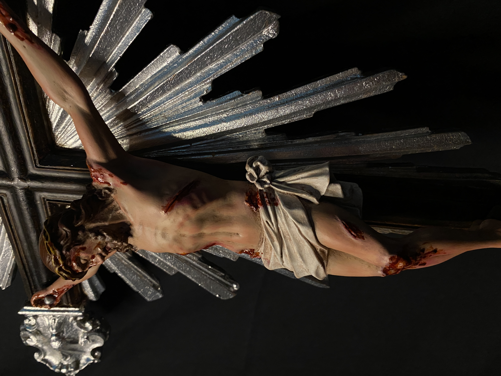

Seu oratório merece este crucifixo
Encomende agora mesmo seu crucifixo realista pintado à mão e receba uma peça feita com fé e devoção.
Quero entrar no grupo VIP da pré-vendaPintado à mão com fé e devoção — uma peça única para o seu oratório.
 Quero entrar no grupo VIP da pré-venda Quero entrar no grupo VIP da pré-vendaMuitos devotos se decepcionam ao comprar imagens religiosas pela internet: peças de gesso com tonalidade artificial, pinturas mal feitas ou até produtos que chegam quebrados. Nosso crucifixo nasceu para ser diferente: realista, respeitoso e feito artesanalmente, peça por peça.
Pintura 100% manual — cada crucifixo é único.
Arte feita com fé — produzida por artesão católico devoto.
Acabamento realista — Sangue realista e em alto relevo.
Entrega protegida — embalagem reforçada contra danos.
Atendimento humano — suporte pelo WhatsApp antes e depois da compra.
“Quero expressar minha sincera gratidão pelo lindo crucifixo que recebi. Cheio de significado, que levarei sempre comigo com muita fé e carinho.”
— Rosangela, Belém-PA“Finalmente encontrei uma peça digna para meu oratório. A pintura é perfeita e realista.”
— José, Joinville-SCEncomende agora mesmo seu crucifixo realista pintado à mão e receba uma peça feita com fé e devoção.
Quero entrar no grupo VIP da pré-venda